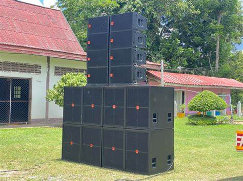

การนำไปใช้งานของแต่ละชนิด
ตู้ลำโพงบลูทูธ
การเชื่อมต่อลำโพงบลูทูธไร้สายกับอุปกรณ์พกพา
ในการใช้ลำโพงบลูทูธไร้สายกับสมาร์ทโฟนหรือแท็บเล็ตคุณต้องจับคู่ด้วยเช่นกันบนอุปกรณ์ Android และ iOS ให้เปิดการตั้งค่าแตะ" Bluetooth "และสลับสวิตช์" Bluetooth "ไปที่ตำแหน่งเปิดแตะลำโพงบลูทู ธ ไร้สายของคุณในรายการอุปกรณ์จากนั้นป้อนรหัสการจับคู่ของลำโพงหากได้รับแจ้ง
ตู้ลำโพงรถยนต์
สำหรับตู้ลำโพงรถยนต์นั้นจะมีการทำตู้ขึ้นมาเป็นพิเศษให้เหมาะกับรถที่จะติดตั้ง ซึ่งจะแตกต่างต่างกับตู้ลำโพงชนิดอื่นๆ เนื่องจากรถแต่ละรุ่นมีขนาดต่างกันจึงต้องคำนวณขนาดของตู้ลำโพงกับค่าพารามิเตอร์ของลำโพงและอุปกรณ์ต่างๆที่นำมาใช้งาน เช่น แอม์ปิฟลายเออร์ ดอกลำโพง ปรีแอมป์ แบตเตอร์รี่ เป็นต้น เพื่อให้ได้เสียงตามที่ต้องการ

ตู้ลำโพงกลางแจ้ง
คืออุปกรณ์ขยายเสียงที่ถูกออกแบบมาเพื่อใช้งานภายนอกอาคารหรือกลางแจ้งโดยเฉพาะ มีคุณสมบัติที่โดดเด่นกว่าลำโพงทั่วไป ทั้งมีกำลังขับเสียงที่สูง และทนทานต่อสภาพอากาศ เพื่อให้สามารถใช้งานได้ดีแม้ในพื้นที่กว้าง ตลอดจนสภาพแวดล้อมที่ไม่เอื้ออำนวย และด้วยคุณสมบัติความทนทานเป็นพิเศษ
อ้างอิง :https://www.jaskeyworld.com/th/news/How-to-use-Bluetooth-speakers.html